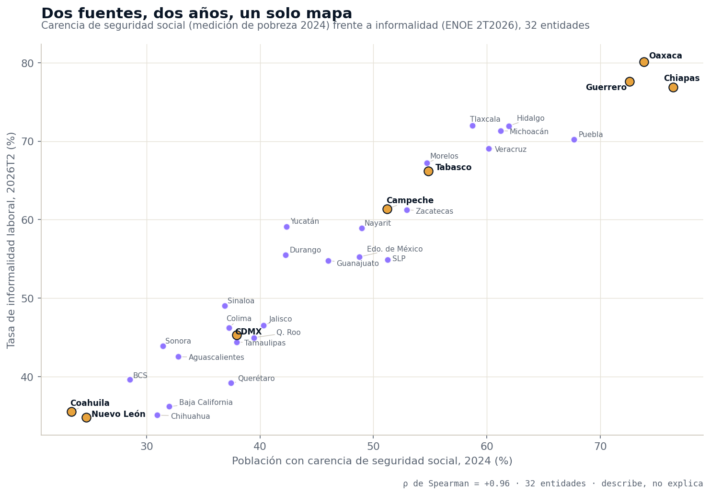
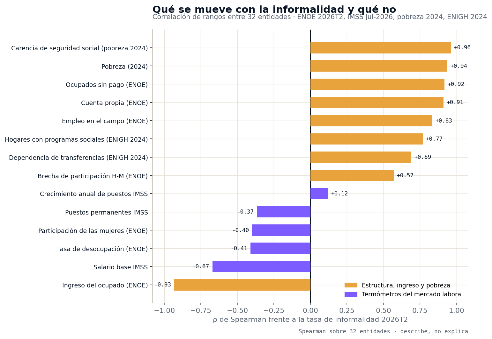
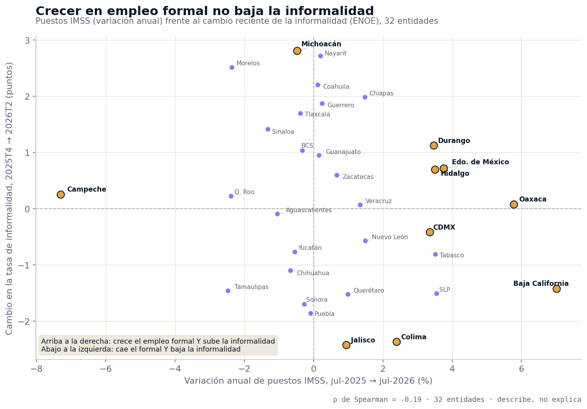

La pregunta con la que arrancó este análisis fue abierta: ¿qué acompaña a la informalidad en cada entidad, y qué no la mueve? Tomamos las 32 entidades completas, sin preseleccionar regiones, y pusimos en una sola tabla cuatro fuentes oficiales que no se hablan entre sí: la ENOE del segundo trimestre de 2026, los puestos registrados en el IMSS a julio de 2026, la medición de pobreza 2024 y la ENIGH 2024. Luego medimos qué variables se ordenan igual que la informalidad entre estados. El resultado incomoda a la forma habitual de diseñar política laboral.
Dos fuentes, dos años, un solo mapa

La ENOE del segundo trimestre de 2026 registra 60,040,094 personas ocupadas, de las cuales 33,083,675 —el 55.1%— trabajan en la informalidad: sin seguridad social ni contrato que las reconozca. La medición de pobreza 2024, un instrumento distinto levantado dos años antes, reporta que el 48.2% de la población carece de acceso a la seguridad social. Al ordenar las 32 entidades por ambas variables, la correlación de rangos es de 0.96: Chiapas encabeza la carencia (76.4%) y es tercero en informalidad (76.9%); Oaxaca, 73.9% y 80.1%; Guerrero, 72.6% y 77.6%. En el otro extremo, Coahuila (23.4% y 35.5%) y Nuevo León (24.7% y 34.8%). Con el porcentaje de población en pobreza la correlación es de 0.94.
Cuando dos mediciones independientes, con universos y años distintos, dibujan el mismo mapa, el fenómeno no es coyuntural. La informalidad no es un indicador del ciclo laboral: es la forma en que la pobreza aparece en el mercado de trabajo.
Fuente: INEGI, ENOE 2T2026 (nivel estatal) y medición de pobreza 2024 (nivel estatal). Correlación de Spearman sobre las 32 entidades: describe, no explica.
Qué se mueve con la informalidad y qué no

La escalera completa ordena el hallazgo. Se mueven con la informalidad, en el mismo sentido y con fuerza: la carencia de seguridad social (0.96), la pobreza (0.94), la proporción de ocupados que trabajan sin pago (0.92), el trabajo por cuenta propia (0.91), el peso del empleo agropecuario (0.83) y el porcentaje de hogares que reciben programas sociales (0.77). Se mueve en sentido contrario, casi como una línea recta, el ingreso promedio del ocupado (−0.93): de $7,454 mensuales en Chiapas a $16,016 en Baja California Sur. Las ocho entidades con ingreso menor a $9,000 tienen todas informalidad de 66% o más; las diez con ingreso mayor a $12,000, todas de 46% o menos.
Y no se mueven con la informalidad las variables que la política laboral suele vigilar: el crecimiento anual de puestos IMSS (0.12), la proporción de puestos permanentes (−0.37) y la tasa de desocupación (−0.41, débil y en la dirección contraria a la intuición).
es la correlación entre el crecimiento anual de puestos IMSS por entidad (julio 2025 a julio 2026) y el cambio en su tasa de informalidad (4T2025 a 2T2026). De los ocho estados donde más creció el empleo formal, en cuatro subió la informalidad y en cuatro bajó.
Menos desempleo no es más derechos
El primer termómetro que falla es el desempleo. Oaxaca tiene la tasa de desocupación más baja del país (0.8%) y la informalidad más alta (80.1%). Guerrero: 1.1% y 77.6%. Morelos: 1.7% y 67.2%. De las ocho entidades con desocupación menor a 2%, seis están entre las diez de mayor informalidad. En el otro extremo, la Ciudad de México registra la desocupación más alta (4.2%) con 45.3% de informalidad, y Coahuila 3.7% con 35.5%. En los territorios donde casi nadie está "desempleado", casi nadie tiene derechos: la gente trabaja porque no puede no trabajar, y lo hace por su cuenta, en el campo o sin pago. A nivel nacional el dato acompaña: por cada persona desocupada hay 2.5 subocupadas (1,636,604 frente a 4,115,690).
Crecer en empleo formal no mueve el mapa

El segundo termómetro es el que más se usa como indicador de éxito: los puestos registrados en el IMSS. A julio de 2026 el país tiene 22,760,154 puestos, 326,987 más que un año antes (+1.5%). Pero al bajar a las entidades, ese crecimiento no se traduce en menos informalidad. Oaxaca creció 5.8% en puestos IMSS —segundo lugar nacional, 13,161 puestos más— y su informalidad pasó de 80.0% a 80.1%. Hidalgo y Durango crecieron 3.5% y su informalidad subió 0.7 y 1.1 puntos. El Estado de México sumó 73,855 puestos (+3.8%) y subió 0.7 puntos. En sentido contrario, Jalisco fue la entidad donde más bajó la informalidad (−2.4 puntos) con un crecimiento IMSS de apenas 0.9%, y Puebla bajó 1.9 puntos con el empleo formal estancado (−0.1%). Baja California es el único caso donde ambas cosas ocurren a la vez: primer lugar en crecimiento formal (+7.0%) y −1.4 puntos de informalidad.
El agregado nacional lo confirma desde el boletín oficial: según el INEGI (boletín 503/26, ENOE 2T2026), entre el segundo trimestre de 2025 y el de 2026 el país sumó 599,334 ocupados netos, mientras 915,189 personas se sumaron al sector informal; el 62% de los ocupados nuevos trabaja por cuenta propia. El empleo formal creció y, al mismo tiempo, la informalidad ganó más gente de la que el país ganó en ocupación.
| Entidad | Informalidad 2T2026 | Carencia seg. social 2024 | Pobreza 2024 | Hogares con programas 2024 | Desocupación 2T2026 | Puestos IMSS, var. anual | Cambio informalidad 4T25→2T26 (pp) |
|---|---|---|---|---|---|---|---|
| Oaxaca | 80.1% | 73.9% | 51.6% | 43.0% | 0.8% | +5.8% | +0.1 |
| Guerrero | 77.6% | 72.6% | 58.1% | 44.6% | 1.1% | +0.2% | +1.9 |
| Chiapas | 76.9% | 76.4% | 66.0% | 38.4% | 2.2% | +1.5% | +2.0 |
| Tlaxcala | 72.0% | 58.7% | 40.8% | 30.4% | 3.4% | −0.4% | +1.7 |
| Hidalgo | 72.0% | 61.9% | 35.3% | 35.9% | 2.2% | +3.5% | +0.7 |
| Michoacán | 71.3% | 61.2% | 34.3% | 28.7% | 1.8% | −0.5% | +2.8 |
| Puebla | 70.3% | 67.7% | 43.4% | 31.9% | 1.8% | −0.1% | −1.9 |
| Veracruz | 69.1% | 60.2% | 44.5% | 39.9% | 1.9% | +1.3% | +0.1 |
| Morelos | 67.2% | 54.7% | 35.4% | 33.2% | 1.7% | −2.4% | +2.5 |
| Tabasco | 66.2% | 54.8% | 34.8% | 30.3% | 4.0% | +3.5% | −0.8 |
| Campeche | 61.4% | 51.2% | 36.7% | 33.6% | 2.7% | −7.3% | +0.3 |
| Zacatecas | 61.2% | 52.9% | 36.4% | 34.8% | 2.4% | +0.7% | +0.6 |
| Yucatán | 59.1% | 42.3% | 26.6% | 36.4% | 1.7% | −0.5% | −0.8 |
| Nayarit | 58.9% | 49.0% | 23.5% | 34.2% | 2.4% | +0.2% | +2.7 |
| Durango | 55.5% | 42.2% | 27.9% | 29.2% | 2.9% | +3.5% | +1.1 |
| Estado de México | 55.3% | 48.8% | 31.2% | 31.8% | 3.1% | +3.8% | +0.7 |
| San Luis Potosí | 54.9% | 51.2% | 30.4% | 32.9% | 3.2% | +3.6% | −1.5 |
| Guanajuato | 54.8% | 46.0% | 26.0% | 32.0% | 3.2% | +0.2% | +0.9 |
| Sinaloa | 49.0% | 36.9% | 17.0% | 35.3% | 3.1% | −1.3% | +1.4 |
| Jalisco | 46.5% | 40.3% | 18.6% | 25.0% | 2.4% | +0.9% | −2.4 |
| Colima | 46.2% | 37.3% | 15.0% | 28.0% | 1.6% | +2.4% | −2.4 |
| Ciudad de México | 45.3% | 38.0% | 19.7% | 36.3% | 4.2% | +3.3% | −0.4 |
| Quintana Roo | 45.0% | 39.5% | 17.7% | 26.9% | 2.4% | −2.4% | +0.2 |
| Tamaulipas | 44.4% | 37.9% | 20.2% | 28.8% | 3.2% | −2.5% | −1.5 |
| Sonora | 43.9% | 31.4% | 14.1% | 29.7% | 2.8% | −0.3% | −1.7 |
| Aguascalientes | 42.5% | 32.8% | 17.1% | 25.4% | 2.6% | −1.0% | −0.1 |
| Baja California Sur | 39.6% | 28.5% | 10.2% | 21.1% | 2.3% | −0.3% | +1.0 |
| Querétaro | 39.2% | 37.4% | 16.3% | 23.7% | 2.3% | +1.0% | −1.5 |
| Baja California | 36.2% | 32.0% | 9.9% | 22.0% | 2.9% | +7.0% | −1.4 |
| Coahuila | 35.5% | 23.4% | 12.4% | 23.1% | 3.7% | +0.1% | +2.2 |
| Chihuahua | 35.1% | 30.9% | 15.1% | 23.6% | 2.7% | −0.7% | −1.1 |
| Nuevo León | 34.8% | 24.7% | 10.6% | 24.0% | 2.5% | +1.5% | −0.6 |
| Nacional | 55.1% | 48.2% | 29.6% | 31.7% | 2.7% | +1.5% | +0.1 |
Las 32 entidades ordenadas por tasa de informalidad laboral (ENOE 2T2026). Carencia de seguridad social y pobreza: medición de pobreza 2024. Hogares con programas sociales: ENIGH 2024, dominio total. Puestos IMSS: variación julio 2025 a julio 2026, sector total y ambos sexos. Cambio en informalidad: 4T2025 a 2T2026, serie corta, dirección y no variación anual. En color, las ocho entidades con mayor crecimiento de puestos IMSS. Fuente: INEGI e IMSS.
Los programas llegan donde está la informalidad, y el mapa no cambia
La ENIGH 2024 añade la pieza de política social. El 31.7% de los hogares del país recibe al menos un programa social. En Guerrero es el 44.6%, en Oaxaca el 43.0%, en Veracruz el 39.9% y en Chiapas el 38.4%; en Baja California Sur el 21.1%, en Baja California el 22.0% y en Coahuila el 23.1%. La correlación con la informalidad es de 0.77: las transferencias están llegando donde está el trabajo sin derechos. Lo que no está ocurriendo es que ese trabajo cambie de naturaleza.
La serie nacional lo muestra en ocho años. Entre 2016 y 2024, la pobreza bajó de 43.2% a 29.6% —13.7 puntos, de 52.2 a 38.5 millones de personas—, pero la carencia por acceso a la seguridad social bajó apenas de 54.1% a 48.2%, 5.9 puntos, y la carencia por acceso a servicios de salud subió de 15.6% a 34.2%. Salir de la pobreza fue, sobre todo, ingreso; no fue conseguir un empleo con derechos.
Tres bloques que salen solos de los datos
Sin clasificar de antemano, las 32 entidades se agrupan por su nivel de informalidad y cada bloque arrastra el resto de las variables:
- Informalidad de 65% o más (10 entidades): Oaxaca, Guerrero, Chiapas, Tlaxcala, Hidalgo, Michoacán, Puebla, Veracruz, Morelos y Tabasco. Promedian 72.3% de informalidad, 64.2% de carencia de seguridad social, 44.4% de pobreza, 35.6% de hogares con programas y $8,633 de ingreso mensual. Concentran 13.4 millones de trabajadores informales —el 40.5% del país— con el 30.8% de los ocupados y solo el 15.0% de los puestos IMSS. Su empleo formal creció 1.3% en el año; su informalidad subió 0.9 puntos en promedio.
- Entre 50% y 65% (8 entidades): Campeche, Zacatecas, Yucatán, Nayarit, Durango, Estado de México, San Luis Potosí y Guanajuato. Promedian 57.6% de informalidad, 48.0% de carencia y $10,427 de ingreso.
- Menos de 50% (14 entidades): de Sinaloa (49.0%) a Nuevo León (34.8%). Promedian 41.7% de informalidad, 33.6% de carencia, 15.3% de pobreza, 26.6% de hogares con programas y $13,233 de ingreso. Tienen el 63.6% de los puestos IMSS del país. Su empleo formal creció 0.6% —menos que el primer bloque— y su informalidad bajó 0.6 puntos.
La comparación entre el primer bloque y el tercero es el corazón del hallazgo: donde más creció el empleo formal en el último año fue en el bloque de mayor informalidad, y ahí fue donde la informalidad más subió. El crecimiento del IMSS y la reducción de la informalidad no son la misma política.
Implicaciones para la gestión pública
1. Los puestos IMSS no son un indicador de resultado de la informalidad
Es habitual que un informe estatal presente el crecimiento del empleo registrado como evidencia de formalización. Los datos de 32 entidades muestran que ambas cosas pueden moverse por separado durante un año completo: Oaxaca es el segundo estado que más crece en IMSS y el primero en informalidad, sin cambio. Un tablero que mida la formalización necesita la tasa de informalidad de la ENOE, el trabajo sin pago y el trabajo por cuenta propia como indicadores propios, no el IMSS como sustituto.
2. La informalidad es un problema de estructura productiva y de protección social, no de desempleo
Con 0.83 frente al empleo agropecuario, 0.91 frente al trabajo por cuenta propia y 0.92 frente al trabajo sin pago, la informalidad de un estado describe qué tipo de unidades económicas existen en él. Reducirla pasa por instrumentos que rara vez viven en la secretaría del trabajo: extensión de la seguridad social a cuenta propia y trabajo familiar, tamaño de las unidades económicas, mercados para el campo. Es un diagnóstico que debe quedar explícito en el plan municipal o estatal de desarrollo, con sus propios indicadores de seguimiento.
3. Tres cautelas al usar estas cifras
Las correlaciones son de rangos sobre 32 entidades y describen un orden común: no prueban causalidad. La medición de pobreza y la ENIGH son fotografías de 2024 y se cruzan como mapa, no como movimiento. Y el cambio en informalidad se mide dentro de la serie disponible de la ENOE (4T2025 a 2T2026): es dirección reciente, no variación anual; la anual la publica el INEGI en su boletín y aquí se cita como tal.
Este hallazgo se conecta con dos análisis previos: el mapa de la informalidad que ningún trimestre mueve ubicó a los 32.6 millones sin seguridad social en el primer trimestre, y los dos estados más productivos son de los peor pagados mostró que la informalidad, no la productividad, explica el ingreso. El eslabón que faltaba es este: tampoco la explica el crecimiento del empleo formal.
Conclusión
Cuatro fuentes oficiales, dos años y 32 entidades dan un solo mapa: la informalidad se ordena igual que la carencia de seguridad social, la pobreza, el trabajo sin pago y el peso del campo, y se ordena al revés que el ingreso. Los dos indicadores con los que se evalúa la política laboral —desempleo y puestos IMSS— no aparecen en ese mapa. El país sumó 326,987 puestos formales en un año y, en el mismo periodo, 915,189 personas se sumaron al sector informal. La conclusión operativa es exigente: crear empleo formal y reducir la informalidad son dos objetivos distintos, se miden con fuentes distintas y hay que perseguirlos por separado.
¿Cómo está tu territorio en las cuatro fuentes?
En la plataforma de GDI puedes consultar la informalidad, el ingreso y la ocupación de la ENOE por entidad, los puestos IMSS por municipio, la medición de pobreza y la ENIGH, y armar el diagnóstico laboral y social de tu plan de desarrollo con fuentes oficiales integradas.
Explorar mi territorioPreguntas frecuentes
¿Crear empleo formal reduce la informalidad en los estados?
No de manera visible en los datos recientes. La correlación entre el crecimiento anual de puestos IMSS (jul-2025 a jul-2026) y el cambio en la informalidad (4T2025 a 2T2026) es de −0.19 entre las 32 entidades. De los ocho estados donde más creció el empleo formal, en cuatro subió la informalidad y en cuatro bajó. Oaxaca creció 5.8% en IMSS y se mantuvo en 80.1%.
¿Qué variables sí se mueven con la informalidad?
Las estructurales: carencia de seguridad social (0.96), pobreza (0.94), ocupados sin pago (0.92), cuenta propia (0.91), empleo agropecuario (0.83), hogares con programas sociales (0.77) e ingreso del ocupado (−0.93).
¿Los estados con menos desempleo tienen menos informalidad?
Al contrario. Oaxaca tiene la desocupación más baja (0.8%) y la informalidad más alta (80.1%); Guerrero 1.1% y 77.6%. De las ocho entidades con desocupación menor a 2%, seis están entre las diez de mayor informalidad. La Ciudad de México (4.2%) y Coahuila (3.7%) tienen 45.3% y 35.5%.
¿Cuántas personas trabajan en la informalidad en México en 2026?
33,083,675 en el segundo trimestre de 2026, el 55.1% de los 60,040,094 ocupados (ENOE, INEGI). Diez entidades con informalidad de 65% o más concentran 13.4 millones, el 40.5%, con el 30.8% de los ocupados y el 15.0% de los puestos IMSS.
Datos técnicos
Fuentes: INEGI, Encuesta Nacional de Ocupación y Empleo, segundo trimestre de 2026 (nivel nacional y estatal; serie disponible 4T2025–2T2026) y boletín de resultados 503/26; IMSS, puestos de trabajo registrados, julio 2025 y julio 2026, sector total y ambos sexos, nivel estatal; INEGI, medición de pobreza 2024, nivel estatal y serie nacional 2016–2024; INEGI, ENIGH 2024, nivel estatal, dominio total. Todo consultado en la capa de datos validada de Lokus. Universo completo: las 32 entidades federativas, sin preselección.
Definiciones: tasa de informalidad laboral = ocupación informal ÷ población ocupada (ENOE). Carencia por acceso a la seguridad social = porcentaje de la población que no cuenta con acceso a la seguridad social según la medición de pobreza. Ocupados sin pago = trabajadores no remunerados ÷ ocupados; cuenta propia = trabajadores por cuenta propia ÷ ocupados (ENOE). Hogares con programas = porcentaje de hogares que reciben al menos un programa social (ENIGH). Puestos IMSS = puestos de trabajo registrados ante el IMSS por entidad de registro del patrón; no incluye trabajo informal, sector público ni ISSSTE.
Método: correlaciones de Spearman (rangos) sobre las 32 entidades; describen un orden común y no prueban causalidad. El cambio en informalidad se calcula dentro de la serie disponible (4T2025 a 2T2026) y se presenta como dirección reciente, no como variación anual; la variación anual nacional (+0.3 puntos) y las cifras de ocupados netos y de incorporación al sector informal (599,334 y 915,189) se toman verbatim del boletín 503/26 del INEGI. Los tres bloques por nivel de informalidad se formaron después de observar los datos, con cortes en 50% y 65%.
Advertencias metodológicas: la ENOE mide personas en el lugar donde viven; el IMSS mide puestos en el lugar donde está registrado el patrón. Son fuentes independientes: en este análisis se comparan en paralelo y nunca se combinan en un mismo cociente. La medición de pobreza y la ENIGH corresponden a 2024 y se cruzan con la ENOE 2026 como mapa, no como movimiento. La ENOE no tiene desagregación municipal.
Nota: el análisis partió de una pregunta abierta y del universo completo ordenado por la métrica; los bloques y el patrón emergen de los datos, no de una clasificación previa. Este artículo actualiza y amplía, con el cruce de cuatro fuentes y datos del 2T2026, el análisis publicado el 17 de julio de 2026 con datos del 1T2026.
Análisis: GDI — Gobierno Digital e Innovación · Fecha de análisis: 28 de agosto de 2026 · gobiernodigitaleinnovacion.com